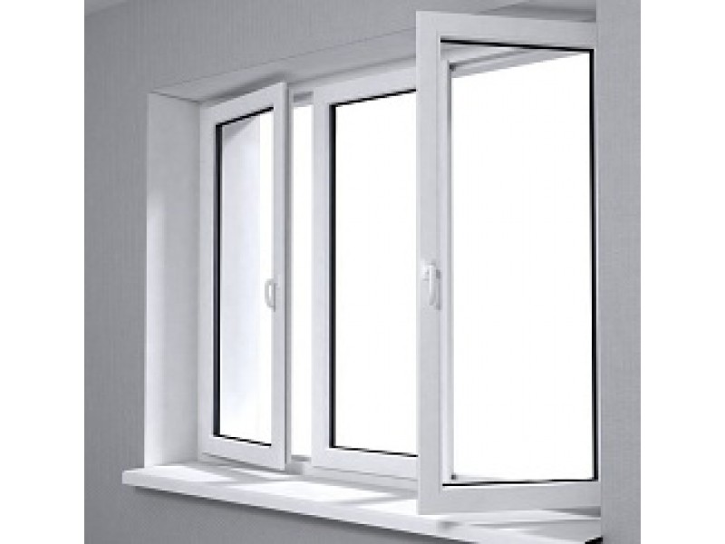

Plastikiniai langai, durys, aliuminio konstrukcijos | TIKS langai
 Siekdami pagerinti Jūsų naršymo kokybę, statistiniais ir rinkodaros tikslais šioje svetainėje naudojame slapukus. Plačiau (privatumo politika) . SUTINKU
Siekdami pagerinti Jūsų naršymo kokybę, statistiniais ir rinkodaros tikslais šioje svetainėje naudojame slapukus. Plačiau (privatumo politika) . SUTINKU
Bendrasis numeris: 8 800 22225
info@tikslangai.lt
Kaunas , Vilnius , Klaipėda , Šiauliai ir Panevėžys
Lietuvių English Prisijungti
Kontaktai Apie mus Apie “TIKS langus” D.U.K. Langai greitai arba pigiai Apie Vilių Eidukevičių Žaliosios energijos naudojimas STIPRIAUSI LIETUVOJE 2016 Karjera Partnerystė Privatumo politika PRODUKTAI Plastikiniai langai IDEALUS LANGAS – klientų siekiamybė Plastikiniai langai – parametrų palyginimas Plastikiniai langai – spalvų katalogas FutureART+ plastikiniai langai FutureART plastikiniai langai ThermoART plastikiniai langai TopART plastikiniai langai ClasicART plastikiniai langai StandART+ plastikiniai langai StandART plastikiniai langai NordART plastikiniai langai Plastikinės durys Dekoruotos plastikinės durys ir dekoruoti durų užpildai TIKS lauko durys TIKS vidaus durys TIKS stumdomos durys TIKS balkono durys Balkonų stiklinimas Balkonų stiklinimas plastiku Balkonų stiklinimas aliuminiu Aliuminio konstrukcijos NAUJIENA! Aliuminiai Top Swing tipo langai Aliuminiai langai ir durys Dekoruotos aliuminio durys ir dekoruoti durų užpildai Aliuminio stumdomos durys Aliuminio sulankstomos durys Terasų ir pavėsinių stiklinimas HI FINITY – stumdomos durys maksimaliam komfortui Priedai Kasdienio komforto priedai Saugumo priedai Antialerginės horizontalios ir vertikalios orlaidės Efektyvaus vėdinimo priedai Išskirtiniai stiklo paketai Tinkleliai nuo vabzdžių PASLAUGOS Konsultacija ryšio priemonėmis Langų ir durų angų matavimas Gaminių techninio projekto paruošimas Gaminių pristatymas Senų langų demontavimas Langų ir durų montavimas Senų langų naudingas panaudojimas Periodinė gaminių priežiūra Garantinis remontas Techninis aptarnavimas pogarantiniu laikotarpiu AKCIJOS Langai išsimokėtinai BE PALŪKANŲ tik su 0,69% administraciniu mokesčiu mėnesiui Langų išpardavimas tiesiai iš sandėlio Pasiūlymai tautiečiams užsienyje Pasiūlymai NT vystytojams ir renovuotojams AKTUALU Naujienos Stipriausi Lietuvoje 2017 STIPRIAUSI LIETUVOJE 2016 20 metų stengiamės labiau, kad 5 000 000 TIKS langų šildytų geriau! Naujos kartos idealus langas Skatiname langus rinktis pagal energetinį efektyvumą UAB „Aveplast“ pristatė savo produkciją užsienio rinkoms UAB „Aveplast“ pradėjo įgyvendinti projektą „UAB „Aveplast“ eksporto potencialo didinimas” „TIKS langai“ pelnė „Gazelės“ apdovanojimą UAB “Aveplast” sėkmingai įgyvendino ES remiamą projektą Patarimai Balkonų stiklinimas: šiuolaikiški sprendimai sename bute Plastikinės durys – kokios rūšys ir kaip išsirinkti? Plastikiniai langai : kaip teisingai išsirinkti savuosius? Aliuminio langai : kodėl verta rinktis? Langų rasojimas: kodėl tai vyksta? Energetinis efektyvumas – pagrindinis langų pasirinkimo kriterijus Mes spaudoje Statybos mitų griovėjai: aliuminio langai ir durys – nuo šiol ir privačioms valdoms? A+ klasės namas: langams keliami reikalavimai Terasos durys – neatsiejama šiuolaikinio būsto dalis Atsakingai pasirinktos įėjimo durys – Jūsų „vizitinė kortelė” Langai: ant taupymo ir efektyvumo svarstyklių Praktiški patarimai renkantis langus Kaip neapsirikti perkant plastikinius langus? Langų saugumas – kokie svarbiausi pasirinkimo kriterijai? Kai langų pasirinkimą nulemia žema kaina SVARBU ŽINOTI Taisyklės ir sąlygos Stiklų skilimą sąlygojančios priežastys. Stiklo paketų vizualinės kokybės vertinimas Orlaidžių naudojimo ir priežiūros taisyklės Garantijos ir garantinio aptarnavimo sąlygos Durų ir langų montavimas – kaip teisingai jį atlikti? Langų ir durų naudojimo bei priežiūros taisyklės Langų rasojimas – kodėl atsiranda ir kaip išvengti? Techniniai paaiškinimai Langai ir plastikinių profilių skirtumai Terminų žodynėlis ATSILIEPIMAI Padėkos Palikite atsiliepimą GALERIJA KOKYBĖ “TIKS langai” kokybės politika Informacija apie vartojimo ginčų neteisminį sprendimą Kontaktai Apie mus Apie “TIKS langus” D.U.K. Langai greitai arba pigiai Apie Vilių Eidukevičių Žaliosios energijos naudojimas STIPRIAUSI LIETUVOJE 2016 Karjera Partnerystė Privatumo politika PRODUKTAI Plastikiniai langai IDEALUS LANGAS – klientų siekiamybė Plastikiniai langai – parametrų palyginimas Plastikiniai langai – spalvų katalogas FutureART+ plastikiniai langai FutureART plastikiniai langai ThermoART plastikiniai langai TopART plastikiniai langai ClasicART plastikiniai langai StandART+ plastikiniai langai StandART plastikiniai langai NordART plastikiniai langai Plastikinės durys Dekoruotos plastikinės durys ir dekoruoti durų užpildai TIKS lauko durys TIKS vidaus durys TIKS stumdomos durys TIKS balkono durys Balkonų stiklinimas Balkonų stiklinimas plastiku Balkonų stiklinimas aliuminiu Aliuminio konstrukcijos NAUJIENA! Aliuminiai Top Swing tipo langai Aliuminiai langai ir durys Dekoruotos aliuminio durys ir dekoruoti durų užpildai Aliuminio stumdomos durys Aliuminio sulankstomos durys Terasų ir pavėsinių stiklinimas HI FINITY – stumdomos durys maksimaliam komfortui Priedai Kasdienio komforto priedai Saugumo priedai Antialerginės horizontalios ir vertikalios orlaidės Efektyvaus vėdinimo priedai Išskirtiniai stiklo paketai Tinkleliai nuo vabzdžių PASLAUGOS Konsultacija ryšio priemonėmis Langų ir durų angų matavimas Gaminių techninio projekto paruošimas Gaminių pristatymas Senų langų demontavimas Langų ir durų montavimas Senų langų naudingas panaudojimas Periodinė gaminių priežiūra Garantinis remontas Techninis aptarnavimas pogarantiniu laikotarpiu AKCIJOS Langai išsimokėtinai BE PALŪKANŲ tik su 0,69% administraciniu mokesčiu mėnesiui Langų išpardavimas tiesiai iš sandėlio Pasiūlymai tautiečiams užsienyje Pasiūlymai NT vystytojams ir renovuotojams AKTUALU Naujienos Stipriausi Lietuvoje 2017 STIPRIAUSI LIETUVOJE 2016 20 metų stengiamės labiau, kad 5 000 000 TIKS langų šildytų geriau! Naujos kartos idealus langas Skatiname langus rinktis pagal energetinį efektyvumą UAB „Aveplast“ pristatė savo produkciją užsienio rinkoms UAB „Aveplast“ pradėjo įgyvendinti projektą „UAB „Aveplast“ eksporto potencialo didinimas” „TIKS langai“ pelnė „Gazelės“ apdovanojimą UAB “Aveplast” sėkmingai įgyvendino ES remiamą projektą Patarimai Balkonų stiklinimas: šiuolaikiški sprendimai sename bute Plastikinės durys – kokios rūšys ir kaip išsirinkti? Plastikiniai langai : kaip teisingai išsirinkti savuosius? Aliuminio langai : kodėl verta rinktis? Langų rasojimas: kodėl tai vyksta? Energetinis efektyvumas – pagrindinis langų pasirinkimo kriterijus Mes spaudoje Statybos mitų griovėjai: aliuminio langai ir durys – nuo šiol ir privačioms valdoms? A+ klasės namas: langams keliami reikalavimai Terasos durys – neatsiejama šiuolaikinio būsto dalis Atsakingai pasirinktos įėjimo durys – Jūsų „vizitinė kortelė” Langai: ant taupymo ir efektyvumo svarstyklių Praktiški patarimai renkantis langus Kaip neapsirikti perkant plastikinius langus? Langų saugumas – kokie svarbiausi pasirinkimo kriterijai? Kai langų pasirinkimą nulemia žema kaina SVARBU ŽINOTI Taisyklės ir sąlygos Stiklų skilimą sąlygojančios priežastys. Stiklo paketų vizualinės kokybės vertinimas Orlaidžių naudojimo ir priežiūros taisyklės Garantijos ir garantinio aptarnavimo sąlygos Durų ir langų montavimas – kaip teisingai jį atlikti? Langų ir durų naudojimo bei priežiūros taisyklės Langų rasojimas – kodėl atsiranda ir kaip išvengti? Techniniai paaiškinimai Langai ir plastikinių profilių skirtumai Terminų žodynėlis ATSILIEPIMAI Padėkos Palikite atsiliepimą GALERIJA KOKYBĖ “TIKS langai” kokybės politika Informacija apie vartojimo ginčų neteisminį sprendimą Plastikiniai langai yra investicija, kurios dėka namuose gali būti šilta, šviesu ir ramu. „TIKS langai“ siūlo platų plastikinių langų pasirinkimą. Rinkitės iš 8 langų modelių, kurie pasižymi skirtingomis savybėmis. Lauko durys – tikra namo fasado puošmena. Lauko plastikinės durys gali būti skirtingų formų, spalvų ir saugumo lygių. „TIKS langai“ lauko durys ne tik išsiskiria savo išvaizda ir saugumu, bet puikiai apsaugo būstą nuo šalčio. Plastikinės vidaus durys interjere itin mėgstamos kuriant šiuolaikišką, modernų interjerą. Pasirinkus atitinkamą modelį, vidaus durys yra lengvai pritaikomos įvairių stilių patalpose. Tai dizaino, funkcionalumo ir ilgaamžiškumo derinys. TIKS langai” balkono durys itin funkcionalios, patvarios ir dera tiek prie interjero, tiek prie namo fasado. Balkono durys pasižymi lengvesne konstrukcija ir žemu slenksčiu, kuris specialiai pritaikytas išėjimui į terasą. „TIKS langai“ stumdomos durys pasižymi labai geru sandarumu, šilumos išlaikymu patalpose, saugumu. Taip pat, „TIKS langai“ stumdomos plastikinės durys – solidus namų elementas, kurio dėka namuose gali būti šviesu. Balkonų stiklinimas plastikinėmis konstrukcijomis pasižymi puikiomis šilumos ir garso izoliacinėmis savybėmis, gera estetine išvaizda bei apsauga. Taip pat šios konstrukcijos nereikalauja papildomos priežiūros. Balkonų stiklinimas aliumininėmis konstrukcijomis, tai komforto, jaukumo ir elegancijos derinys, siekiantiems išplėsti būsto erdvę. Įstiklinti rėmai yra stumdomi horizontaliai, nesumažinant balkono erdvės. Fasadai nepamainomos šiuolaikinėse statybose. Dauguma naujos kartos pastatų tviska stiklo ir aliuminio junginiais. Aliuminis – tai metalas, kurio unikalios savybės yra naudojamos šiuolaikinėms architektūros formoms išgauti. Žengdama koja kojon su šiuolaikinėmis architektūros tendencijomis ir norėdama patenkinti net ir pačių reikliausių klientų poreikius UAB „Aveplast“ kartu su partneriu „Veyna“ savo klientams siūlo platų spektrą plastikinių durų užpildų. Stumdomos durys pasižymi efektyviu erdvės išnaudojimu, nes nereikalauja plačios erdvės. Be abejonės svarbus šių konstrukcijų požymis – didelių plotų įstiklinimas ir didelis įleidžiamos natūralios šviesos kiekis. Sulankstomos durys yra skirtos dideliam plotui įstiklinti. Šios durys yra patogios naudoti, kompaktiškos ir puikus sprendimas stiklinant didelį plotą viena konstrukcija. “TIKS langai” kolektyvas supranta, kad patogumas yra viena svarbiausių vertybių, todėl suteikia galimybę plastikinius langus pagerinti komplektuojant juos su komfortą pagerinančiais priedais. „TIKS langai” siekia užtikrinti jūsų namų saugumą, todėl ne tik gamina stabilius ir tvirtus plastikinius langus, bet ir suteikia galimybę juos dar labiau sustiprinti komplektuojant skirtingus saugumo priedus. Šiandien plastikiniai langai ne tik apsaugo namus nuo aplinkos poveikio, bet ir gali būti puiki namų interjero ir eksterjero puošmena. Jūsų langai gali būti išskirtiniai, kai pasirenkami reikiami stiklo paketai. Siekiant užtikrinti tinkamą patalpų vedinimą rekomenduojame plastikinius langus įsigyti su vėdinimo priedais Dažnas klientų pasirinkimas – horizontalios orlaidės plastikiniams langams arba laipsninė mikroventiliacija. Geriausia ilgalaikė priemonė apsauganti Jus ir Jūsų namus nuo vabzdžių yra tinkleliai. Tinkleliai nuo vabzdžių yra lengvai įrengiami, patogūs naudoti, estetiški.
„TIKS langai” prekybos tinklas
„TIKS LANGAI” tai bene didžiausias plastikinių ir aliuminių langų bei durų tiekimo tinklas Lietuvoje. Daugiau nei 24 metus veikianti įmonė savo klientams gali pasiūlyti platų plastikinių ir aliuminio langų bei durų asortimentą, stumdomas sistemas, fasadus, terasų stiklinimą ir kt. Taip pat ir visas su gaminių montavimu susijusias paslaugas. Ilgametė patirtis, aukšta gaminių ir paslaugų kokybė – veiksniai išskiriantys „TIKS LANGAI“ iš kitų įmonių.“
Daugiau
„TIKS langai” prekybos tinklas
„TIKS langai” – tai plastikinių ir aliuminių langų, durų ir balkono stiklinimo pardavimo tinklo prekės ženklas. Po šiuo ženklu slypinčius žmonės vienija ne tik lietuviškų gaminių pardavimo idėja, bet taip pat ir puoselėjamos pagarbos klientui vertybės. „TIKS langai” šūkis – „ Greiti kaip jūsų norai “ – atspindi mūsų pažadą klientui teikti visuomet kokybiškus gaminius ir laikytis duoto žodžio. Neabejotinai „TIKS langai” yra didžiausias Lietuvoje plastikinių langų ir durų tiekimo tinklas, kuriame Jūs galite įsigyti plastikinius langus, duris bei jų priedus, o taip pat gauti visas su jų įrengimu susijusias paslaugas.
„TIKS langai” klientų aptarnavimu rūpinasi UAB „Aveplast”, gaminančios „TIKS langus”, atstovybės esančios Vilniuje, Kaune, Klaipėdoje, Šiauliuose ir Panevėžyje, ir apie 11 įgaliotų atstovų, dirbančių beveik visuose Lietuvos miestuose. „TIKS langai“ išskirtinis dėmesys klientų patogumui yra neatsiejama „TIKS langai“ kolektyvo darbo dalis. UAB „Aveplast” savo veiklą pradėjo 1995 metais, šiandien dirba daugiau nei 70 darbuotojų, kurių didžioji dalis – ilgamečiai ir didelę patirtį turintys specialistai.
Šiandien gaminame plačiausią Lietuvoje plastikinių langų asortimentą bei ypatingą dėmesį skiriame savo klientų aptarnavimui.
Šiuo metu esame vienintelė Lietuvos langų pramonės įmonė atestavusi visus savo klientų aptarnavimo procesus pagal visuotinai pripažintą kokybės vadybos standartą ISO 9001:2008.UAB „Aveplast” gaminami ir teikiami šie produktai:
◆ Plastikiniai langai ir balkono durys ;
◆ Plastikinės vidaus durys ir lauko durys ;
◆ Plastikinės stumdomos durys ;
◆ Balkonų stiklinimas plastiku ;
◆ Balkonų stiklinimas aliuminiu ;
◆ Aliuminio fasadai ;
◆ Aliuminio stumdomos konstrukcijos ir sulankstomos konstrukcijos ;
◆ Kitos sudėtingos aliuminio konstrukcijos;
◆ Tinkleliai nuo vabzdžių ir kiti priedai .
„TIKS langai” yra vienas žinomiausių prekės ženklų Lietuvoje. Dabar „TIKS langų” komanda – ne vien UAB „Aveplast”, bet ir kitos įmonės – beveik 500 bendraminčių komanda, siekianti užtikrinti aukščiausią langų gamybos ir klientų aptarnavimo kokybę.
Noriu padėkoti ponui Viktorui už puiku bendradarbiavimą sudarant mūsų langų projektą. Langų montuotojams dėkojam už tvarkingą, operatyvų, kokybišką darbą. Esame labai patenkinti langais, namuose šilta, gražu ir nesigirdi triukšmo iš gatvės. Bendrausime toliau (Edita, Klaipėda, 2020) 2020-09-28T16:48:58+00:00 Noriu padėkoti ponui Viktorui už puiku bendradarbiavimą sudarant mūsų langų projektą. Langų montuotojams dėkojam už tvarkingą, operatyvų, kokybišką darbą. Esame labai patenkinti langais, namuose šilta, gražu ir nesigirdi triukšmo iš gatvės. Bendrausime toliau (Edita, Klaipėda, 2020) https://www.tikslangai.lt/testimonials/9778/ Didelis ačiū už puikų sprendimą 6m ilgio balkonui. Gaminys matosi kokybiškas, šiltas ir labai patogiai stumdomi bei varstomi langai
Atskiras ačiū gerb. Viliui už pagalbą suprojektuojant šią langų sistemą ir Miglei už operatyvius atsakymus darbų eigoje. (Rūta, 2018) 2018-12-19T10:21:33+00:00 Didelis ačiū už puikų sprendimą 6m ilgio balkonui. Gaminys matosi kokybiškas, šiltas ir labai patogiai stumdomi bei varstomi langai Atskiras ačiū gerb. Viliui už pagalbą suprojektuojant šią langų sistemą ir Miglei už operatyvius atsakymus darbų eigoje. (Rūta, 2018) https://www.tikslangai.lt/testimonials/8863/
Noriu padėkoti UAB “TIKS LANGAI”, už puikiai atlikta darbą. Langus gavau ankščiau nustatyto termino. Langų kokybe likau patenkintas. Ačiū vadybininkei Eglei Balčaitytei už operatyvumą ir malonų bendravimą, tai žmogus kuris išmano savo darbą. Sėkmės 🙂 (Denis Blažuk, 2018)
2018-09-07T10:07:40+00:00 Noriu padėkoti UAB “TIKS LANGAI”, už puikiai atlikta darbą. Langus gavau ankščiau nustatyto termino. Langų kokybe likau patenkintas. Ačiū vadybininkei Eglei Balčaitytei už operatyvumą ir malonų bendravimą, tai žmogus kuris išmano savo darbą. Sėkmės 🙂 (Denis Blažuk, 2018) https://www.tikslangai.lt/testimonials/8629/Esame labai patenkinti tiek pačių langų kokybe, tiek ir personalo kompetentingumu. Vadybininkė Miglė (Vilniaus skyrius) puikiai patarė dėl pačių langų pasirinkimo, jų konstrukcijos, norimo mechanizmo. Tą pačią dieną gavome pasiūlymą! Atskiras ačiū langų matavimą atlikusiam meistrui. Tikrai aukštos klasės specialistas, puikiai rado kalbą su statybą atliekančiais meistrais. Langai įstatyti greitai ir atrodo nuostabiai! (Liudmila Visockienė, 2018)
2018-11-06T10:01:02+00:00 Esame labai patenkinti tiek pačių langų kokybe, tiek ir personalo kompetentingumu. Vadybininkė Miglė (Vilniaus skyrius) puikiai patarė dėl pačių langų pasirinkimo, jų konstrukcijos, norimo mechanizmo. Tą pačią dieną gavome pasiūlymą! Atskiras ačiū langų matavimą atlikusiam meistrui. Tikrai aukštos klasės specialistas, puikiai rado kalbą su statybą atliekančiais meistrais. Langai įstatyti greitai ir atrodo nuostabiai! (Liudmila Visockienė, 2018) https://www.tikslangai.lt/testimonials/8790/ Sakiausi langus is Tiks langai panevežyje , uzsakymas ivyko labai greitai padare dar greiciau nei buvo nurodyta sutartyje. Langu kokybe ir kaina labai gera esu patenkinta s 100%! Vadybinin ke Lina labai maloni ir puikiai suprantant i ko nori klientas. Sekancia langu partija tai pat sakysiuosi tik is TIKS langai. (Ugnius Kulikauskas, 2018)
Esame dėkingi už suteiktas paslaugas: kokybiškus ir šiltus plastikinius langus bei duris bei atliktais darbais. Nuoširdus ačiū vadybininkei ir darbus atlikusiems montuotojams. Šie žmonės puikiai išmano savo darbą ir įrodė, kad Lietuvoje yra aukštos kokybės paslaugas teikiančių profesionalų, sugebančių taip nuoširdžiai ir atsakingai bendrauti. Su pagarba, Dalia S. (Dalia Solominienė, 2017)
2018-02-27T09:10:20+00:00 Esame dėkingi už suteiktas paslaugas: kokybiškus ir šiltus plastikinius langus bei duris bei atliktais darbais. Nuoširdus ačiū vadybininkei ir darbus atlikusiems montuotojams. Šie žmonės puikiai išmano savo darbą ir įrodė, kad Lietuvoje yra aukštos kokybės paslaugas teikiančių profesionalų, sugebančių taip nuoširdžiai ir atsakingai bendrauti. Su pagarba, Dalia S. (Dalia Solominienė, 2017) https://www.tikslangai.lt/testimonials/8154/Nuoširdžiausiai dėkoju už Jūsų gerą širdį ir pastangas man padedant prašviesinti Tėvelių Gyvenimą naujais puikiais langais. Dėkoju visai Jūsų puikiai komandai - matuotojui bei montuotojams. Mano Tėveliai ir aš labai esame jums dėkingi… Ačiū, Ačiū iš visos širdies… Pagarbiai Lolita Martinonytė. Jūsų langai ir ypač Jūsų visų nepriekaištingas Darbas tiesiog NUOSTABUS… (Lolita Martinonytė, 2017)
2018-02-27T09:08:46+00:00 Nuoširdžiausiai dėkoju už Jūsų gerą širdį ir pastangas man padedant prašviesinti Tėvelių Gyvenimą naujais puikiais langais. Dėkoju visai Jūsų puikiai komandai - matuotojui bei montuotojams. Mano Tėveliai ir aš labai esame jums dėkingi… Ačiū, Ačiū iš visos širdies… Pagarbiai Lolita Martinonytė. Jūsų langai ir ypač Jūsų visų nepriekaištingas Darbas tiesiog NUOSTABUS… (Lolita Martinonytė, 2017) https://www.tikslangai.lt/testimonials/8152/Nuoširdžiai dėkoju visai „TIKS langai“ komandai už puikiai atliktą užsakymą. Ypatingas ačiū vadybininkei. Gavome puikių patarimų dėl langų užsakymo, puikus kainos ir kokybės santykis. Rekomenduoju visiems naudotis jūsų firmos paslaugomis. Jūs neabejotinai STIPRIAUSI Lietuvoje. (Giedrius Ivanauskas, 2017)
2018-02-27T08:57:27+00:00 Nuoširdžiai dėkoju visai „TIKS langai“ komandai už puikiai atliktą užsakymą. Ypatingas ačiū vadybininkei. Gavome puikių patarimų dėl langų užsakymo, puikus kainos ir kokybės santykis. Rekomenduoju visiems naudotis jūsų firmos paslaugomis. Jūs neabejotinai STIPRIAUSI Lietuvoje. (Giedrius Ivanauskas, 2017) https://www.tikslangai.lt/testimonials/8149/Esu patenkinta šios įmonės paslaugomis Kaune. Ypač malonios vadybininkės dėmesiu klientui, kuri visada surasdavo atsakymus į mums rūpimus klausimus, patardavo iš techninės gaminių pusės. Tikiuosi, kad ir kokybė bus gera. Sėkmės Jums. (Donata Taurozevičė, 2017)
2018-02-27T08:56:03+00:00 Esu patenkinta šios įmonės paslaugomis Kaune. Ypač malonios vadybininkės dėmesiu klientui, kuri visada surasdavo atsakymus į mums rūpimus klausimus, patardavo iš techninės gaminių pusės. Tikiuosi, kad ir kokybė bus gera. Sėkmės Jums. (Donata Taurozevičė, 2017) https://www.tikslangai.lt/testimonials/8148/ Noriu padėkoti kompanijai už profesionaliai ir kokybiškai atliktą darbą. Teko pasinaudoti jų paslaugomis porą kartų. Maždaug prieš 6 metus užsakinėjau langus, pagamino laiku kaip ir žadėjo. Langų kokybe patenkintas, iki šiol jokių problemų neturiu. Neseniai užsakinėjau lauko duris. Už kurias asmeniškai dėkoju Vilniaus filialo darbuotojams. Kurie tikrai padėjo man išsirinkti ir patarė tinkamiausią variantą, rinko durų dizainą “kaip sau”, su kruopštumu ir su dušia.
Nuoširdžiai dėkoju vadybininkei už malonų ir gerą bedrininkavimą. Ir p. Algiui, kuris paaiškino išsamiai, kaip gerai ir tinkamai sumontuot duris. Tinkamai pasirūpino geru supakavimu, kad saugiai iškeliautų tiesiai į Angliją. Ateity vėl kai prireiks kreipsiuos į Tiks langai. Ką rekomenduoju ir savo draugams. (Ruslan Kajuk, 2017)
Kviečiame užsukti į „TIKS langai” biurą ar atstovybę Jūsų mieste!
Apie gaminius
Langai Durys Balkonų stiklinimas Aliuminio konstrukcijos Langų priedai PaslaugosApie TIKS langus
Pradžia Apie mus Palikite atsiliepimą “TIKS langai” kokybės politika Karjeros galimybės D.U.KKontaktai
KAUNAS (centrinė būstinė) Statybininkų g. 7
tel. (8-37) 46 00 39, (8-37) 46 00 40,
el. paštas: info@tikslangai.lt
Darbo laikas:
I-IV 8:00-18:00; V 8:00-17:00
I. Šimulionio g. 3, Vilnius
(įėjimas tarp 3-čio ir 5-to namo)
tel. (8-5) 233 08 85
el. paštas: vilnius@tikslangai.lt
Darbo laikas: I-V 8.00 - 17.00
Dubysos g. 25, kab. 201
mob. tel. +370 685 34 169,
el. paštas: klaipeda@tikslangai.lt
Darbo laikas: I-V 8.00 - 17.00
Aido g. 45,
tel. (8-41) 55 02 01,
mob. tel +370 652 14313
el. paštas: siauliai@tikslangai.lt
Darbo laikas: I-V 9.00 - 18.00
J.Basanavičiaus g. 32,
tel. (8-45) 43 02 83,
el. paštas: panevezys@tikslangai.lt
Darbo laikas:
I-IV 8:00 - 18:00; V 8:00 - 17:00
Tel: (8-315) 55 956, (8-614) 82 602
alytus@tikslangai.lt
Baisogala:
Maironio g. 46,
Tel: (8-687) 84 324
baisogala@tikslangai.lt
Biržai:
Kęstučio g. 24,
Tel: (8-686) 08 179
birzai@tikslangai.lt
Klaipėdos raj.:
Žvelsėnų g.5, Žvelsėnų km. Klaipėdos raj.
Tel: (8-604) 24 788, (8-645) 75 985
klaipedosraj@tikslangai.lt
Joniškis:
Livonijos g. 7,
Tel: (8-612) 22941
joniskis@tikslangai.lt
Kaišiadorys:
Girelės g. 12,
Tel: (8-346) 67 060,
mob. (8-613) 19 288
kaisiadorys@tikslangai.lt
Kuršėnai:
J. Basanavičiaus g. 8,
Tel: (8-601) 11104
kursenai@tikslangai.lt
V. Kudirkos g. 14, Kuršėnų m.
Tel: (8-684) 84 060
Lentvaris:
Geležinkelio g. 19,
Tel: (8-528) 28 768, (8-616) 00 104
lentvaris@tikslangai.lt
Linkuva, Pakruojo raj.:
Dariaus ir Girėno g. 12,
(8-615) 90 043
linkuva@tikslangai.lt
Šilalė-Tauragė:
Tel. nr. 8 650 45533
info@tikslangai.lt Visos teisės saugomos UAB "Aveplast"© 2020 Sprendimas UAB "Ainera"
